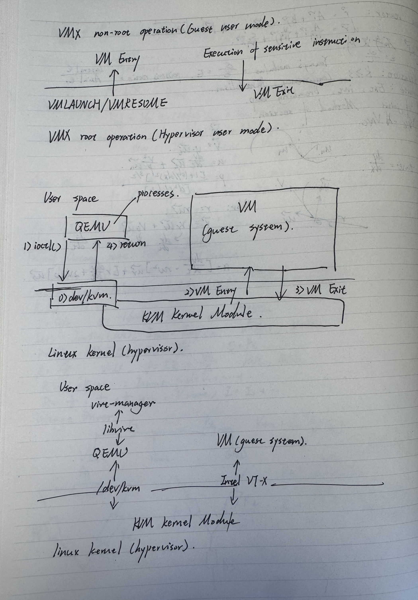

Virtualization is a great tool for testing/learning codes on different environment. My personal experience with virtual machine started by vmware for studying linux. At that time wsl (windows sublinux) was not a very popular option. But my understanding about virtualization did not get deeper than that. It was not a hot topic in neither industry nor academia in the recent ten years, which caused almost every online tutorial video/blogs stops after introducing basic concepts such as hypervisor, but the technical details beneath that is definitely worth learning if you want to gain a deeper understanding on Linux kernels. This article aims to achieve a deeper overview of virtualization, focusing on KVM (Linux Kernel-Based Virtual Machine), which is more straightforward in some sense than windows virtualization technologies. The article covers the most common virtualization stack under linux, but please notice that there are also other existing combinations to achieve the same effect.
Modern VM Design Philosophies
We start from the very basic notions and philosophies of achieving virtualization. Almost every virtualization stack can be broken into three main parts: the hypervisor, the emulator and virtual machines management.
Hypervisor
A hypervisor is a piece of software which allows to run multiple virtualized operating systems, referred to as virtual machines or VMs, concurrently on a computer. The hypervisor sits between the virtual machines and the actual physical architecture, and manages system calls to the hardware. Depending on the way of implementation, hypervisors can be categorized into two types:
- Type 1: Also called bare metal hypervisors, operates directly on the hardware. Every operating systems running on it will need to require access from it to use the hardware. In such a setup, the different virtual systems are running within domains (doms). The first domain (dom0) is started first by the hypervisor after boot as it is used to manage the hypervisor itself, and consequently the other domains. For this reason, dom0 is also called the management domain. (Hardware -> Hypervisor -> Guest OS)
- Type 2: Also called hosted hypervisors. It is designed to run on the host system and does not have direct control on hardware. Type 2 hypervisor will share the resources of the host system within the OS they run on top of. This is in contrasts to hypervisors of the previous type which have full control over the hardware. (Hardware -> Host OS -> Hypervisor -> Guest OS)
Hardware-assisted Virtualization
During the design of the x86 platform, virtualization was not a major consideration. Due to their design, some of the sensitive instructions that could be encountered during virtualization would go undetected by x86 CPUs. To change this, people can only achieve virtualization (or emulation in this context) through emulation, which is fully implement a software-based hardware computer that can emulate every instruction performed by the guest OS. Among them the most famous emulator is QEMU (Quick Emulator), which is a OSS that has many usage besides virtualization (it will be mentioned again in KVM implementation section). However, because of the nature of emulator, which is translate the emulated binary codes of guest system to an equivalent binary format which is executed by the host machine, it slows down the operating speed.
There are two types of sensitive instructions in general:
- Control-sensitive instructions: attempt to change the state of system resources (key mem r/w operations)
- Behavior-sensitive instructions: operate in accordance with the state of system resource (i/o)
To address the performance challenge, Hardware-assisted virtualization is designed by adding a new CPU execution mode known as guest mode to complement the previously existing user and kernel modes. This mode would be used to execute the code of guest system. Additionally, new CPU that enable switching from and to this mode on the detection of sensitive instructions have been introduced. When a sensitive instruction is detected, the CPU notifies the hypervisor, which in turn exits the guest mode and handles this instruction in hypervisor user mode. Once the instruction handling is done, a switch back (always denote as VMRESUME instruction) will be performed and control is given back to the guest system. The hardware-based virtualization significantly improves the performance compared to traditional fully software virtualization. This is because most instructions are now directly running on the physical device without the need of translation. Hardware-assisted virtualization has been part of all Intel and AMD processors produced after 2006. On Intel CPUs it has the name Intel-VT, and AMD-V on AMD processors. The flow of hardware-assisted virtualization is illustrated by the first graph in picture 1.
KVM Design Top View
KVM and QEMU
When we say KVM, we are generally pointing to the KVM kernel module in Linux. However, it cannot run a VM by itself. Simply speaking, the KVM kernel module operates more like a manager instead of executer. To achieve full virtualization, it needs to be combined with QEMU (in KVM it is treated as a user side process). Given that QEMU is a software-based emulator, it interprets and executes CPU instructions one at a time in software, which means its performance is limited. However, it is possible to improve the performance if three conditions are met:
- Target instructions can be directly executed by the CPU
- That instruction can be given without modification to the CPU for direct execution in VMX (virtual machine extension) non-root operation mode
- A target instruction that cannot be directly executed can be identified and given to QEMU for emulator processing.
The flow of KVM is illustrated by the second graph in picture 1. It includes six steps in running a KVM:
- Step 0: a file named /dev/kvm is created by the KVM kernel module. It enables QEMU to convey a variety of requests to the KVM kernel module to execute hypervisor funtions.
- Step 1: When QEMU starts up to execute a guest system, it repeatedly makes ioctl() system calls specifying this file (or file descriptor). When it is time to begin executing the guest system, QEMU again calls ioctl() to instruct the KVM module to start up the guest system
- Step 2: The kernel module, after receiving the ioctl() call, will set up the guest system by performs VM Entry and begin executing the guest system.
- Step 3: During guest system operation, if a sensitive instruction is detected, a VM Exit is performed, and KVM identifies the reason for the exit.
- Step 4: If QEMU intervention is needed to execute an I/O task or another task, control is transferred to the QEMU executes the ask.
- Step 5: On execution completion. QEMU again makes an ioctl() call and requests the KVM to resume guest system processing.
This QEMU/KVM flow is basically repeated during the emulation of a VM. QEMU and KVM thus has a relatively simple struction.
- Implementation of a KVM kernel module transforms the Linux kernel into a hypervisor.
- There is one QEMU process for each guest system. When multiple guest systems are running, the same number of QEMU processes are running.
- QEMU is a multi-thread program, and one virtual CPU of a guest system corresponds to one QEMU threads. The steps are performed in unit of threads
- QEMU threads are treated like ordinary user processes from the viewpoint of the Linux kernel. Scheduling for the thread corresponding to a virtual CPU of the guest system, for example, is governed by the Linux kernel scheduler in the same way as other process threads.
Other Components
Virt-manager
A GUI/CUI user interface used for managing VMs; it calls VM functions using libvirt.
libvirt
A tool-and-interface library common to server virtualization software.
The complete hierarchy of these four components is illustrated by the last graph in picture 1.
KVM Implementation
For this section I used a reduced version of KVM (Linux kernel source code is still too much for me, although reading the reduced version also wasn't a light read)
Key kernel functions
- ioctl(int fd, unsigned long op, ...): system call manipulates the underlying device parameters of special files. The argument fd must be an open file descriptor. The second argument is a device-dependent operation code. The third argument is an untyped pointer to memory. It's traditionally char *argp. An ioctl() op has encoded in it whether the argument is an in parameter or out parameter, and the size of the argument argp in bytes. Macros and defines used in specifying an ioctl() op are located in the file <sys/ioctl.h>. Success will always return a non-negative number. In KVM context, the kvm.h file defines macro that used to encode KVM related operations, which can be used as an argument in ioctl() that performs corresponding operation to the file which achives the VM behaviour.
- mmap(size_t length; void addr[length], size_t length, int prot, int flags, int fd, off_t offset): mmap() creates a new mapping in the virtual address space of the calling process. The starting address for the new mapping is specified in addr. The length argument specifies the length of the mapping. If addr is NULL, then the kernel takes it as a hint about where to place the mapping; on Linux, the kernel will pick a nearby page boundary and attempt to create the mapping there. If another mapping already exists there, the kernel picks a new address that may or may not depend on the hint. The address of the new mapping is returned as the result of the call. The contents of a file mapping are initialized using length bytes starting at the offset in the file, referred to by the file descriptor.
Guest Code
Since this reduced virtual machine only has a cpu (which means we don't have a physical screen), the example code achieves i/o operation by writing to special i/o ports, as detailed below:
//guest.c
#include <stdint.h> //For types like uint16_t and uint8_t
static void outb(uint16_t port, uint8_t value) {
// This line uses assembly language to send a byte 'value' to an I/O 'port'.
asm("outb %0,%1" : /* empty */ : "a" (value), "Nd" (port) : "memory"); 7}
outbstands for "output byte."- It takes a
portnumber (where to send the data) and avalue(the actual data to send). - The
asmkeyword tells the C compiler to insert direct assembly language instructions. In this case,outbis a standard x86 instruction to write a byte to an I/O port. - The port number
0xE9is a convention often used in virtual environments for simple text output.
Then we can take a look at the main program:
//guest.c
void
__attribute__((noreturn))
__attribute__((section(."start")))
_start(void){
const char *p;
//Loop through hello world and print
for (p = "Hello, World!\n"; *p; ++p)
outb(0xE9, *p);
//Write the number 42 to memory address 0x400
*(long*) 0x400 = 42;
//Infinite loop that halts the CPU
for(;;) asm("hlt": : "a"(42): "memory")
}
Finally, we can look at the Makefile
#Compile guest.c for a 64-bit virtual CPU
guest64.o: guest.c
$(CC) $(CFLAGS) -m64 -ffreestanding -fno-pic -c -o $@ $^
#Link the compiled guest code into a raw binary image
guest64.img: guest64.o
$(LD) -T guest.ld $^ -o $@
# Embed the raw binary image into an object file for the host program
%.img.o: %.img
$(LD) -b binary -r $^ -o $@
# Combine all guest images (16bit, 32bit, 64bit) into a single payload object
payload.o: payload.ld guest16.o guest32.img.o guest64.img.o
$(LD) -T lt; -o $@
guest.c is compiled into an object file. The options like -m64 tell the compiler to create 64-bit code, and -ffreestanding means it won't link against a standard C library. Next, the object file is linked into a raw binary image. This image is just the pure machine code, without any extra operating system headers or structure. Finally the raw guest64.img is treated as a block of data and embedded directly into an object file. This allows the main program to include this guest code as if it were a regular c array. The payload.o then aggregates these different guest code versions.
Creating VM
Opening KVM Device
// kvm-hello-world.c
#include <fcntl.h> // For open()
#include <stdio.h> // For perror()
#include <stdlib.h> // For exit()
struct vm {
int sys_fd; // File descriptor for /dev/kvm
int fd; // File descriptor for the specific VM
char *mem; // Pointer to the VM's memory
};
void vm_init(struct vm *vm, size_t mem_size)
{
// Open the KVM device file to access the KVM subsystem
vm->sys_fd = open("/dev/kvm", O_RDWR);
if (vm->sys_fd < 0) {
perror("open /dev/kvm"); // Print error if opening fails
exit(1);
}
// ... more setup code will go here ...
}
open("/dev/kvm", O_RDWR): This line opens the KVM device file. It's like asking the Linux kernel, "Hey KVM, I want to use your virtualization powers!" Thevm->sys_fdvariable will hold a number that represents this open connection.
Instantiate KVM
// kvm-hello-world.c (inside vm_init function)
// ... (previous code) ...
#include <sys/ioctl.h> // For ioctl()
#include <linux/kvm.h> // For KVM_CREATE_VM
void vm_init(struct vm *vm, size_t mem_size)
{
// ... (code to open /dev/kvm and check API version) ...
// Ask KVM to create a new Virtual Machine
vm->fd = ioctl(vm->sys_fd, KVM_CREATE_VM, 0);
if (vm->fd < 0) {
perror("KVM_CREATE_VM"); // Print error if VM creation fails
exit(1);
}
// ... more setup code will go here ...
}
ioctl(vm->sys_fd, KVM_CREATE_VM, 0): This is a system call (Input/Output Control) that sends a command to the KVM device.KVM_CREATE_VMis the command to create a new VM. If successful,vm->fdwill get another number, specifically for this new VM instance. This is like getting the keys to your new sandbox!
Giving Memory to VM
// kvm-hello-world.c (inside vm_init function)
// ... (previous code) ...
#include <sys/mman.h> // For mmap()
void vm_init(struct vm *vm, size_t mem_size)
{
// ... (code to create the VM) ...
// Allocate a block of memory on the Host for the VM to use
vm->mem = mmap(NULL, mem_size, PROT_READ | PROT_WRITE,
MAP_PRIVATE | MAP_ANONYMOUS | MAP_NORESERVE, -1, 0);
if (vm->mem == MAP_FAILED) {
perror("mmap mem");
exit(1);
}
// Tell KVM about this memory region for the VM
struct kvm_userspace_memory_region memreg = {
.slot = 0, // Memory slot ID (can have multiple)
.flags = 0, // No special flags
.guest_phys_addr = 0, // Where this memory appears in the VM (starts at 0)
.memory_size = mem_size, // How much memory
.userspace_addr = (unsigned long)vm->mem, // Address in Host's memory
};
if (ioctl(vm->fd, KVM_SET_USER_MEMORY_REGION, &memreg) < 0) {
perror("KVM_SET_USER_MEMORY_REGION");
exit(1);
}
}
mmap(NULL, mem_size, ...): This is how the Host application asks the Linux kernel for a large block of its own memory.mem_sizedetermines how big the VM's RAM will be (e.g., 2 MB in our example).vm->memwill point to the start of this memory in the Host's address space.KVM_SET_USER_MEMORY_REGION: Thisioctlcommand tells KVM, "Hey, this block of memory that I (the Host) just allocated? That's for the VM. When the VM tries to access memory at its own address0x0, it should be directed to my memory atvm->mem."
VCPU
Key Registers
rip(Instruction Pointer): This register holds the memory address of the next instruction the VCPU should execute. It's like a bookmark in the guest code, telling the VCPU where it is in the program.rsp(Stack Pointer): This register points to the current top of the "stack" in memory. The stack is used for temporary storage, like remembering where to return after calling a function, or storing local variables.rflags(Flags Register): This register holds various "flags" (single bits) that describe the current state of the CPU, such as whether a previous arithmetic operation resulted in a zero, or whether interrupts are enabled.- Control Registers (
cr0,cr3,cr4) and EFER: These are special registers that control how the CPU operates, such as enabling protected mode, paging, or long mode (64-bit operation).
Instantiate VCPU
// kvm-hello-world.c (inside vcpu_init function)
#include <sys/ioctl.h> // For ioctl()
#include <linux/kvm.h> // For KVM_CREATE_VCPU
struct vcpu {
int fd; // File descriptor for this specific VCPU
struct kvm_run *kvm_run; // Shared memory for VCPU execution
};
10void vcpu_init(struct vm *vm, struct vcpu *vcpu)
{
// Ask KVM to create a new Virtual CPU within the VM
vcpu->fd = ioctl(vm->fd, KVM_CREATE_VCPU, 0);
if (vcpu->fd < 0) {
perror("KVM_CREATE_VCPU"); // Print error if VCPU creation fails
exit(1);
}
// ... more setup code will go here ...
}
ioctl(vm->fd, KVM_CREATE_VCPU, 0): This command tells KVM to create a VCPU tied to ourvm->fd(the VM's file descriptor). If successful,vcpu->fdwill get a new number, representing this specific VCPU. It's like getting the key to the robot's brain.
Mapping kvm_run Structure
For the host and VCPU to talk to each other efficiently, KVM provides a special shared memory region. The host maps this memory into its own address space. This region is called kvm_runand it's where KVM reports what the VCPU is doing (e.g., why it stopped, like an I/O operation or a halt instruction).
// kvm-hello-world.c (inside vcpu_init function)
// ... (previous code for KVM_CREATE_VCPU) ...
#include <sys/mman.h> // For mmap()
void vcpu_init(struct vm *vm, struct vcpu *vcpu)
{
// ... (code to create the VCPU) ...
// Get the required size for the kvm_run structure
int vcpu_mmap_size = ioctl(vm->sys_fd, KVM_GET_VCPU_MMAP_SIZE, 0);
if (vcpu_mmap_size <= 0) {
perror("KVM_GET_VCPU_MMAP_SIZE");
exit(1);
}
// Map the shared kvm_run memory into our host application's address space
vcpu->kvm_run = mmap(NULL, vcpu_mmap_size, PROT_READ | PROT_WRITE,
MAP_SHARED, vcpu->fd, 0);
if (vcpu->kvm_run == MAP_FAILED) {
perror("mmap kvm_run");
exit(1);
}
}
KVM_GET_VCPU_MMAP_SIZE: Thisioctlasks KVM how big thekvm_runstructure needs to be.mmap(NULL, vcpu_mmap_size, ..., vcpu->fd, 0): Thismmapcall is similar to how we mapped the VM's memory, but this time, it maps a region associated with thevcpu->fd.vcpu->kvm_runwill then point to this shared memory. This is the direct communication channel with the VCPU.
Setting the VCPU's Initial State (Registers)
The kvm-hello-world program supports different CPU modes (like real mode, protected mode, 64-bit long mode). For our guest.c (which is compiled for 64-bit operation), we need to set up the VCPU for long mode. This configuration is part of functions like run_long_modeand setup_long_mode.
Let's look at a simplified version of setting the registers for 64-bit mode:
1// kvm-hello-world.c (simplified from run_long_mode and setup_long_mode)
2#include <linux/kvm.h> // For kvm_sregs and kvm_regs structures
3
4void configure_vcpu_for_long_mode(struct vm *vm, struct vcpu *vcpu) {
5 // 1. Get the VCPU's "special" registers (segment registers, control registers)
6 struct kvm_sregs sregs;
7 if (ioctl(vcpu->fd, KVM_GET_SREGS, &sregs) < 0) {
8 perror("KVM_GET_SREGS"); exit(1);
9 }
10
11 // 2. Configure control flags for 64-bit mode
12 // These specific flags enable features like protected mode and paging.
13 // (We'll cover these CPU modes in detail in Chapter 6)
14 sregs.cr0 = CR0_PE | CR0_PG; // Enable Protected Mode and Paging
15 sregs.cr4 = CR4_PAE; // Enable Physical Address Extension
16 sregs.efer = EFER_LME | EFER_LMA; // Enable Long Mode Extensions and Long Mode Active
17
18 // 3. Configure a basic 64-bit code segment (simplified)
19 // This tells the CPU how to interpret code addresses.
20 // (Details about segments will be in Chapter 6)
21 sregs.cs.base = 0; sregs.cs.limit = 0xffffffff; sregs.cs.selector = 0x8;
22 sregs.cs.type = 11; sregs.cs.present = 1; sregs.cs.dpl = 0;
23 sregs.cs.db = 0; sregs.cs.s = 1; sregs.cs.l = 1; sregs.cs.g = 1;
24
25 // 4. Set the updated special registers back into the VCPU
26 if (ioctl(vcpu->fd, KVM_SET_SREGS, &sregs) < 0) {
27 perror("KVM_SET_SREGS"); exit(1);
28 }
29
30 // 5. Get the VCPU's general purpose registers
31 struct kvm_regs regs;
32 if (ioctl(vcpu->fd, KVM_GET_REGS, ®s) < 0) {
33 perror("KVM_GET_REGS"); exit(1);
34 }
35
36 // 6. Configure initial general purpose registers
37 regs.rflags = 2; // Basic initial flags (bit 1 is always set) 38 regs.rip = 0; // Instruction Pointer: Start executing guest code from virtual address 0
39 regs.rsp = 2 << 20; // Stack Pointer: Set up a stack at the end of our 2MB VM memory
40
41 // 7. Set the updated general purpose registers back into the VCPU
42 if (ioctl(vcpu->fd, KVM_SET_REGS, ®s) < 0) {
43 perror("KVM_SET_REGS"); exit(1);
44 }
45}
KVM_GET_SREGSandKVM_SET_SREGS: Theseioctlcalls are used to get and set "special" registers (like segment registers and control registers) that define the VCPU's operational mode.KVM_GET_REGSandKVM_SET_REGS: Theseioctlcalls are used to get and set the VCPU's general-purpose registers (likerip,rsp,rax,rbx, etc.).regs.rip = 0;: This is crucial! It tells the VCPU that when it starts, its first instruction is located at memory address0within the VM's memory. This is exactly where ourguest.ccode is loaded.regs.rsp = 2 << 20;: This sets up the stack pointer. Our VM has 2MB of memory (0x200000 bytes). Settingrspto2 << 20(which is0x200000) means the stack will start at the very top of the VM's memory and grow downwards.sregs.cr0 = CR0_PE | CR0_PG;, etc.: These lines set various control flags in special registers. They are essential for transitioning the VCPU into a 64-bit operating mode.
KVM Host Application
High-Level Overview
1// kvm-hello-world.c
2int main(int argc, char **argv)
3{
4 struct vm vm;
5 struct vcpu vcpu;
6 // ... (code to select CPU mode, e.g., real mode, long mode) ... 7
8 // 1. Initialize the Virtual Machine (VM)
9 vm_init(&vm, 0x200000); // Create VM and give it 2MB of memory 10
11 // 2. Initialize the Virtual CPU (VCPU) for that VM
12 vcpu_init(&vm, &vcpu); // Create VCPU and set up communication 13
14 // 3. Select and run the appropriate guest code based on mode 15 switch (mode) {
16 // ... other modes ...
17 case LONG_MODE: // For our 64-bit "Hello, world!" guest
18 return !run_long_mode(&vm, &vcpu);
19 }
20
21 return 1;
22}
- The
mainfunction is the entry point of our host application. vm_init(&vm, 0x200000): This function handles opening/dev/kvm, creating the VM instance, and allocating 2MB of memory for it.vcpu_init(&vm, &vcpu): This function creates the VCPU and sets up the sharedkvm_runstructure for communication.run_long_mode(&vm, &vcpu): This is where the core action happens for our 64-bit guest. It prepares the VCPU for long mode, loads the guest code, and then enters the main execution loop.
Loading the Guest Code
1// kvm-hello-world.c (simplified from run_long_mode)
2extern const unsigned char guest64[], guest64_end[]; // Declares our guest code
3
4int run_long_mode(struct vm *vm, struct vcpu *vcpu)
5{
6 // ... (code to configure VCPU for 64-bit mode) ...
7
8 // Copy the guest's machine code into the VM's memory
9 // 'vm->mem' points to the start of the VM's memory (virtual address 0)
10 memcpy(vm->mem, guest64, guest64_end-guest64); // Copy 'guest64' to 'vm->mem'
11
12 // ... (then call run_vm to start execution) ...
13 return run_vm(vm, vcpu, 8);
14}
extern const unsigned char guest64[], guest64_end[];) make our compiledguest.cbinary available as a C array (guest64) in the host application.guest64_endmarks the end of this array.memcpy(vm->mem, guest64, guest64_end-guest64);: This is a standard C function that copies the bytes of ourguest64program into the memory region thatvm->mempoints to. Sincevm->memcorresponds to the VM's physical address0, this means our guest code is now residing at the very beginning of the VM's memory, ready to be executed.
Running the VCPU and Handling VM Exits
1// kvm-hello-world.c (simplified from run_vm)
2#include <linux/kvm.h> // For KVM_EXIT_HLT, KVM_EXIT_IO
3
4int run_vm(struct vm *vm, struct vcpu *vcpu, size_t sz)
5{
6 for (;;) { // An infinite loop to keep running the VM
7 // Tell KVM to run the VCPU. It will execute guest code
8 // until a VM exit occurs.
9 if (ioctl(vcpu->fd, KVM_RUN, 0) < 0) {
10 perror("KVM_RUN"); // Handle error
11 exit(1);
12 }
13
14 // Check why the VCPU stopped (the 'exit_reason')
15 switch (vcpu->kvm_run->exit_reason) {
16 case KVM_EXIT_HLT: // The guest executed 'hlt' instruction
17 printf("Guest halted!\n");
18 goto check; // Exit the loop and check results
19
20 case KVM_EXIT_IO: // The guest performed an I/O operation
21 // Check if it's our specific port 0xE9 for printing
22 if (vcpu->kvm_run->io.direction == KVM_EXIT_IO_OUT
23 && vcpu->kvm_run->io.port == 0xE9) {
24 char *p = (char *)vcpu->kvm_run; // Pointer to shared data
25 // Print the character from guest to host console
26 fwrite(p + vcpu->kvm_run->io.data_offset,
27 vcpu->kvm_run->io.size, 1, stdout);
28 fflush(stdout);
29 continue; // Resume guest execution
30 }
31 // If it's another I/O, fall through to default error
32 default: // Any other unexpected VM exit
33 fprintf(stderr, "Got unexpected exit_reason %d\n",
34 vcpu->kvm_run->exit_reason);
35 exit(1);
36 }
37 }
38
39 check: // Label for when guest halts
40 // ... (code to check guest results will go here) ...
41 return 1; // Success
42}
ioctl(vcpu->fd, KVM_RUN, 0): This is the magical call that passes control to the KVM kernel module. KVM then makes your physical CPU execute the guest's instructions in a virtualized mode. The host application pauses here until the VCPU causes a VM exit.vcpu->kvm_run->exit_reason: AfterKVM_RUNreturns, this field in the sharedkvm_runstructure tells the host why the VCPU stopped.KVM_EXIT_HLT: This means the guest executed thehltinstruction. The host application then knows the guest has finished its primary task.KVM_EXIT_IO: This means the guest tried to perform an I/O operation, like ouroutb(0xE9, character).- The host then checks if it's
port 0xE9(our virtual console port). - If it is, it retrieves the character from the
kvm_runstructure (which holds the data the guest tried tooutb) and prints it to the host's console (stdout). continue;: After handling the I/O, the loop continues, callingKVM_RUNagain to resume the guest from where it left off.
- The host then checks if it's
- This loop continues, letting the guest run, handling VM exits, and resuming, until the guest finally halts.
Checking Guest Results
1// kvm-hello-world.c (simplified from run_vm, after 'check' label)
2int run_vm(struct vm *vm, struct vcpu *vcpu, size_t sz)
3{
4 // ... (execution loop and exit handling) ...
5
6 check: // Guest has halted, now verify results
7 struct kvm_regs regs; // Structure to hold VCPU's general registers
8 uint64_t memval = 0; // Variable to hold value from VM memory
9
10 // Get the VCPU's current register values
11 if (ioctl(vcpu->fd, KVM_GET_REGS, ®s) < 0) {
12 perror("KVM_GET_REGS"); exit(1);
13 }
14
15 // Check if the RAX register contains the expected value (42) 16 if (regs.rax != 42) {
17 printf("Wrong result: RAX is %lld\n", regs.rax);
18 return 0; // Failure
19 }
20
21 // Copy the value from virtual memory address 0x400 into memval 22 memcpy(&memval, &vm->mem[0x400], sz); // sz is 8 for 64-bit guest
23 // Check if the memory at 0x400 contains the expected value (42)
24 if (memval != 42) {
25 printf("Wrong result: memory at 0x400 is %lld\n",
26 (unsigned long long)memval);
27 return 0; // Failure
28 }
29
30 printf("Guest executed successfully!\n");
31 return 1; // Success
32}
KVM_GET_REGS: Thisioctlretrieves the current values of the VCPU's general-purpose registers (likerax) after it has halted.regs.rax != 42: Our guest code was designed to put42into theraxregister before halting. The host checks this.memcpy(&memval, &vm->mem[0x400], sz);: Our guest code also wrote42to virtual memory address0x400. The host directly accessesvm->mem(which is its pointer to the VM's memory) at an offset of0x400to read this value.- If both checks pass, the host application confirms that the guest program ran successfully.